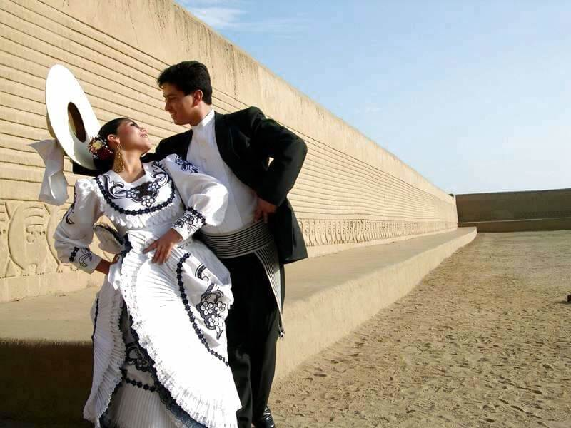

Danza Típicas del Perú

- Considerada la danza nacional del Perú, la Marinera es una elegante y coqueta danza que representa el cortejo amoroso. Se caracteriza por el uso de pañuelos blancos y movimientos suaves, simbolizando el enamoramiento y la galantería.
- Esta danza afroperuana es muy alegre y enérgica, con ritmos marcados y movimientos rítmicos de cadera y pies. Es una expresión de celebración y resistencia cultural, nacida de la herencia africana en la costa.
- Originario del norte de la costa, el Tondero mezcla influencias indígenas, españolas y africanas. Es una danza festiva que narra una historia de amor y desamor, acompañada de guitarras y cajón peruano.
- Antecesora de la Marinera, esta danza también es de cortejo y tiene una gran importancia histórica. Es rápida y juguetona, con movimientos que muestran la destreza de los bailarines.
- Danza típica de la región de Ica, que representa el trabajo en los campos de algodón. Los movimientos imitan la recolección y la alegría del campesino.
- También una danza afroperuana, se caracteriza por su ritmo lento y sensual, con movimientos fluidos de caderas y zapateo, acompañados de guitarra y cajón.